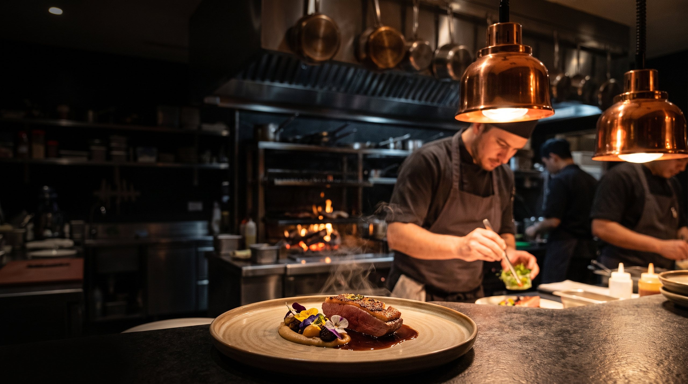
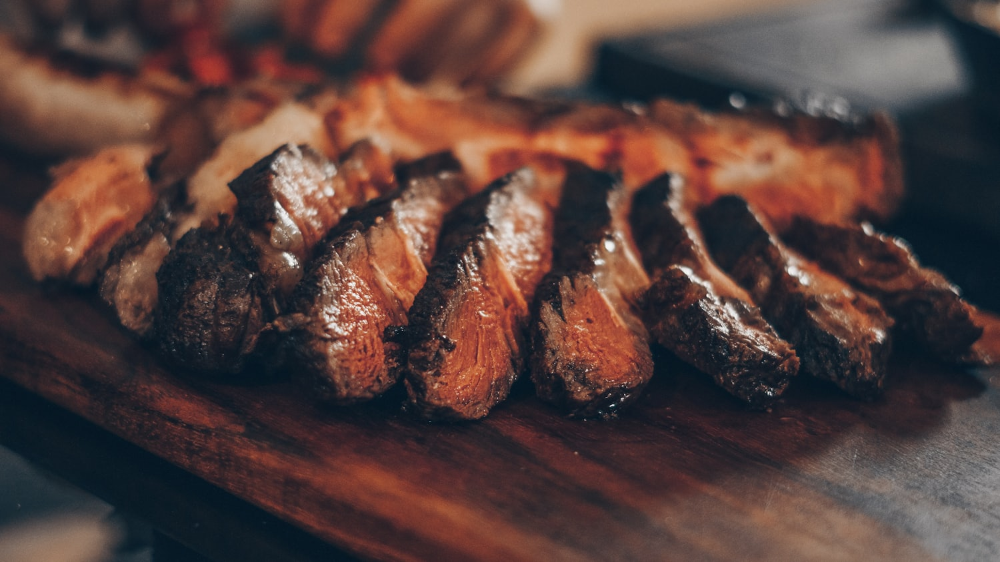
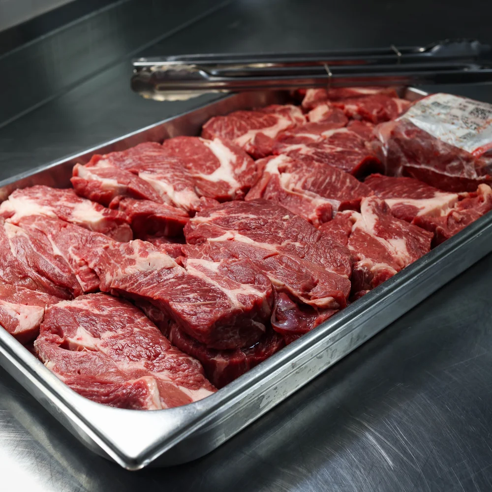
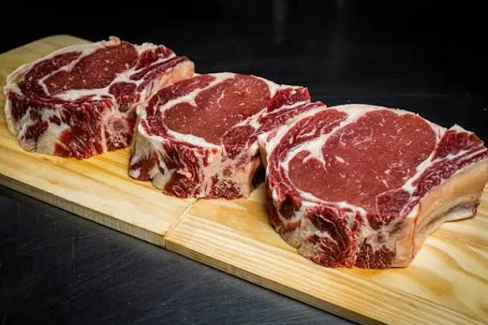
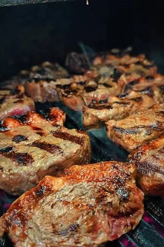
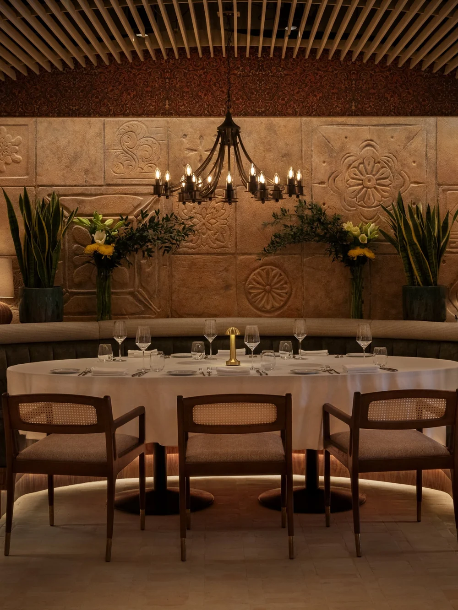

Brasa viva · maturação longa
Onde o fogo
vira arte
Cortes maturados sobre brasa viva de lenha. Técnica apurada, ponto exato e uma noite pensada nos mínimos detalhes, do primeiro aroma à última brasa.
O método
O fogo é o método.
A precisão, o idioma.
Acendemos a lenha antes de o salão abrir e deixamos a brasa amadurecer até virar ingrediente, não só calor, mas sabor, aroma e tempo.
Cozinhar sobre brasa viva é aceitar que o fogo conduz. Nosso trabalho é ouvi-lo: ler a cor das brasas, achar a distância exata da grelha, esperar o ponto certo. Técnica antiga, obsessão contemporânea.
- Lenha, não gás Fogo de madeira de lei, do começo ao fim. Sem atalhos.
- Produto de origem Pequenos produtores, colheita da semana, desperdício zero.
- Ponto exato Cada corte sai no seu tempo. O fogo decide; nós obedecemos.

A origem
O sabor começa antes do fogo.
Carne boa não se disfarça na brasa, se revela nela. Por isso escolhemos o corte, a origem e o tempo de maturação antes de acender a primeira lenha.

45dias
de maturação a seco, no ponto de cada corte
A maturação concentra o sabor e amacia a fibra. É paciência transformada em textura, o tipo de detalhe que você sente na primeira garfada e não consegue explicar. A gente explica: tempo, temperatura e fogo de verdade.
- Cortes selecionadosAncho, chorizo, costela, T-bone
- FogoLenha de quebracho e carvão de origem
- DesperdícioAparas viram caldo, gordura vira tempero

Balcão de chef
Doze lugares.
Uma fogueira. Uma noite.
A forma mais completa de viver a BRASA é no balcão de chef, doze lugares de frente para a brasa, onde cada tempo é finalizado diante de você. Um único turno por noite. Reservas limitadas.
-
Brasa na sua frente
Cada prato é selado, defumado e finalizado no balcão, ao alcance da mão, do aroma e da conversa com quem cozinha.
-
Harmonização autoral
Nosso sommelier conduz a noite taça a taça, vinhos naturais, saquês e fermentados que conversam com a defumação da brasa.
-
Um ritmo só seu
Doze lugares, um único turno. Do primeiro fogo ao último doce, a cozinha conduz a noite no tempo dela, e no seu.


A casa
- FuncionamentoTer–Dom, a partir das 19h
- Telefone+55 11 3000-0000
- RespostaConfirmamos em até 2 horas
Ter–Dom · a partir das 19h
Reserve sua mesa
Atendemos de terça a domingo, a partir das 19h. Para o balcão de chef, reserve com alguns dias de antecedência, os doze lugares vão rápido.
Vila Madalena, SP
Onde o fogo mora
- Endereço
- Rua das Brasas, 120, Vila Madalena
São Paulo · SP · 05435-000 - Horário
-
Ter a Qui · 19h–23h30
Sex e Sáb · 19h–00h30
Dom · 18h–22h30 - Fale conosco
-
+55 11 3000-0000
reservas@brasa.example
@brasa